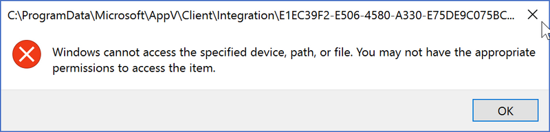
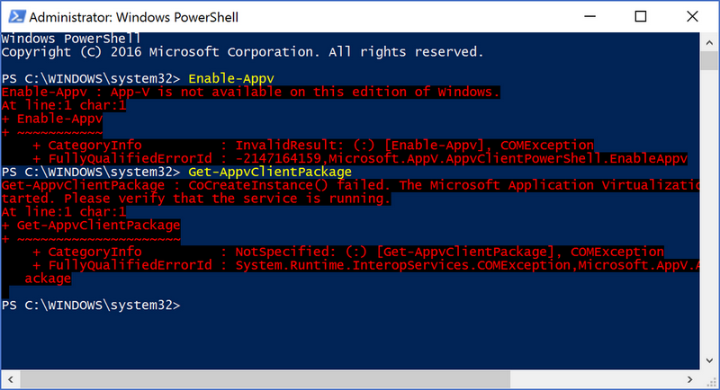
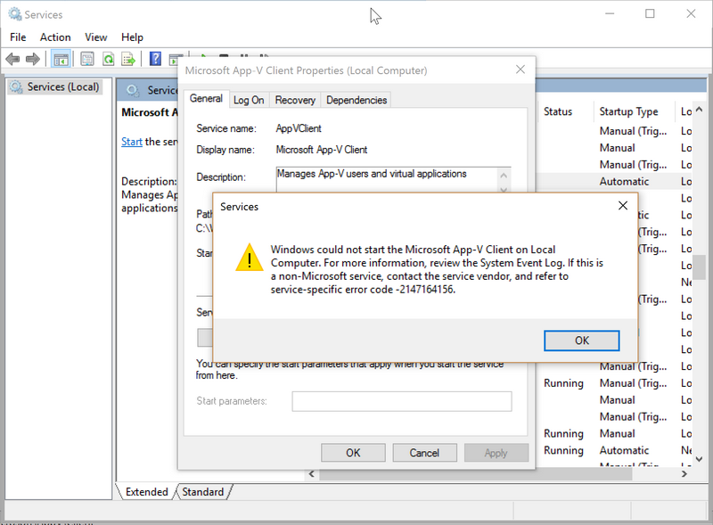
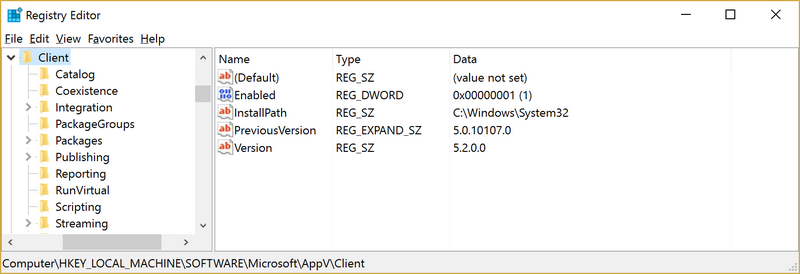
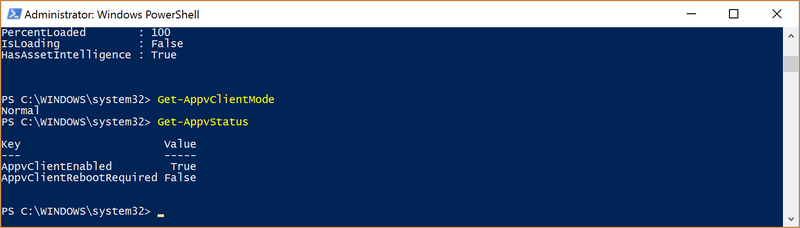

What is the problem with App-V on Windows 10 Anniversary Update
Microsoft released App-V as an add-on for Windows in the MDOP (Microsoft Desktop Optimization Pack). So I also run App-V to have some hands on experience with applications on my Windows 8.1 and later Windows 10 installation. Last week I upgraded to Windows 10 Anniversary Update 1607, and I run in to errors with App-V applications. My Total Commander session lost all the configuration settings, slow starting or even not starting App-V applications.
App-V is now part of Windows, but only for the Enterprise edition. I am running my private computers on Windows 10 Professional unfortunately. For me it wasn’t such a big problem for missing App-V, but the applications can not be removed as well without a running client.
In this blog I will show how to enable the App-V client again. Be aware that this probably not allowed in the EULA, but you are at least able to remove the packages and stop using App-V.
What are the symptoms of a disabled App-V client
Some of the App-V applications will still start, but it take ages to start. And also the settings and files which are stored in the %appdata% of the Virtual File System are inaccessible:

Running the PowerShell command Enable-AppV is giving the error message ‘Enable-Appv : App-V is not available on this edition of Windows’. The command Get-AppvClientPackage and Get-AppvClientPackage | Remove-AppvClientPackage are not functioning as well:

Starting the Microsoft App-V Client is not possible, even after setting the service to start manual or automatic.

How to fix the App-V client and let it start again
The fix is easy, open the registry editor and change the following key:
HKEY_LOCAL_MACHINE\SOFTWARE\Microsoft\AppV\Client\Enabled
To the value 1

After this change the App-V client will start function, and you are also able to remove all the App-V packages and disable it again to be compliant ;-).

In case you want to get rid of all you’re App-V packages run this (be carefull):
Get-AppvClientPackage | Remove-AppvClientPackage